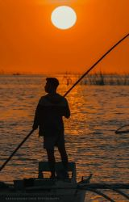
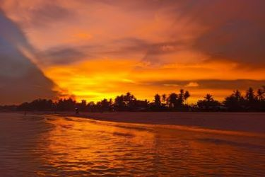
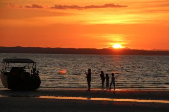

Bantayan Seawall, also known as the Pantalan, is famous for its stunning sunsets. As the sun begins to set, the sky changes into bright and beautiful colors, creating a picture-perfect view. The warm hues of orange, pink, and purple fill the sky, making it a popular spot for visitors and locals alike to pause and enjoy the moment.
The seawall is a peaceful place where people come to relax and reflect. Many visitors take a leisurely walk along the water’s edge while watching the sun dip below the horizon. Whether you're looking for a quiet time alone or a chance to enjoy nature with friends and family, Bantayan Seawall offers a beautiful setting to unwind and appreciate the beauty of the island.
Things to Do
- Enjoy a leisurely stroll along the seawall, taking in the picturesque views.
- Bring a picnic and relax on one of the benches as you watch the sunset.
- Engage with local fishermen and learn about their daily routines.
- Capture stunning photographs of the sunset and the vibrant colors reflecting on the water.
- Sample street food from nearby vendors, offering local delicacies and refreshments.
Sunset Gallery



Local Tips
For the best sunset experience, arrive early to secure a good spot along the seawall. Bring a light jacket as it can get breezy in the evening. Don’t forget your camera to capture the stunning views!
History
Bantayan Seawall has a rich history, serving both as a protective structure for the coastal area and a place for locals to gather, reflect, and enjoy the natural beauty of the island.
Visitor Testimonials
"The sunsets here are unlike anything I've ever seen!" – Maria L.
"A peaceful spot to unwind after a busy day. Highly recommend visiting." – John D.
How to Get There
Bantayan Seawall is easily accessible from the Bantayan Island town center. If you're staying in the nearby area, simply take a tricycle or rent a motorbike for a short drive. The seawall is open year-round and is free to visit. If you're coming from Cebu City, you can take a bus or ferry to Bantayan Island, which is a few hours away.
Nearby Attractions
- Bantayan Church – Visit the historic Sts. Peter and Paul Church, just a short distance away.
- Paradise Beach – A pristine, less crowded beach perfect for a relaxing swim.
- Ogtong Cave – Explore this hidden gem for an unforgettable adventure.